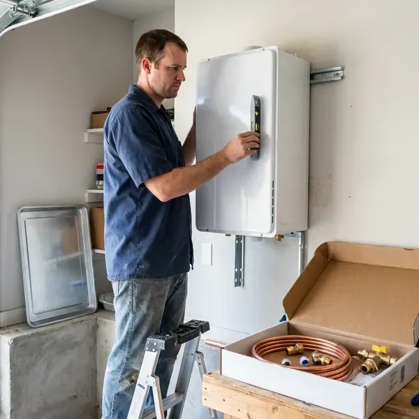

Electric Tankless Water Heater Installation in West Haven, CT
Considering an electric tankless water heater for your West Haven, CT home? GLV Plumbing provides expert installation services.
- Skilled, Certified Plumbers
- Expert Plumbers
- Code Compliant
- Fast, Efficient Installation

Ready for Instant Hot Water in West Haven, CT?
Our experienced technicians are ready to provide a free estimate and professional service for your West Haven home.
Electric Tankless Water Heater Installation for Homes in West Haven, CT
GLV Plumbing focuses on electric tankless water heater installation for homes across West Haven and the surrounding Connecticut areas. These modern units provide hot water on demand, saving space and energy compared to traditional tank models. Our certified plumbers ensure a proper, safe and code-compliant installation.
Our expertise includes:
- Whole-home electric tankless units from Stiebel Eltron and Rheem
- Careful sizing and placement of tankless units.
- Precise Water Line Connections

Additional Plumbing Installation Services in West Haven, CT
We install water heaters, pumps, lines, and fixtures across West Haven, CT with precision workmanship that meets every local code.


Customers
Why Choose GLV Plumbing for Electric Tankless Water Heater Installation in West Haven, CT?
Choosing GLV Plumbing for your electric tankless water heater installation means partnering with experienced local plumbers. We understand the specific demands of Connecticut homes and water conditions.
- Accurate Sizing, We size units by flow rate, temperature rise and household demand.
- Energy Savings, Heat water only when you need it, cutting down on wasted energy and utility bills.
- Long Lifespan, Electric tankless heaters generally last much longer than conventional tank-style water heaters, offering greater long-term value.
Citywide Coverage
No matter where your home is located in West Haven, CT, our team is equipped to provide timely and professional electric tankless water heater installation services. We understand the local housing stock and can recommend the best unit for your property.
Experienced Team
Our team works with Stiebel Eltron, Rheem, EcoSmart and Bosch electric tankless models. They know each brand's installation and wiring requirements.
Safety-First Approach
Safety and code compliance are top priorities for every electric tankless water heater installation we undertake in West Haven. We make sure all electrical connections are safe, properly grounded and meet current Connecticut electrical codes to prevent any hazards.
Trusted Certified West Haven Plumbing Services Professionals
At GLV Plumbing, we take pride in providing certified plumbing services throughout West Haven, CT. Backed by leading industry credentials, our experienced plumbers combine technical skill with genuine customer care. Whether it is repair, installation, or maintenance, we follow strict safety and quality standards to deliver lasting results you can trust.
Call Us Now PHCC Plumbing Contractor Recognition
PHCC Plumbing Contractor Recognition Better Business Bureau (BBB) Accreditation
Better Business Bureau (BBB) Accreditation Angi Certified Pro
Angi Certified Pro ISO 9001 Quality Management Certification
ISO 9001 Quality Management CertificationEnergy-Smart Electric Tankless Water Heater Installation in West Haven, CT
Residential Electric Tankless Water Heater Installation in West Haven
For homeowners in West Haven, an electric tankless water heater means a continuous supply of hot water for bathing, washing dishes and laundry. We help you choose the right size unit based on your household's peak hot water demand, ensuring you never run cold. Our service includes a full assessment of your current electrical panel capacity, as these units require dedicated high-amperage circuits. We work with leading brands like Rheem, Ecosmart and Stiebel Eltron to provide reliable solutions tailored to your home's needs.

Emergency Electric Tankless Water Heater Replacement in West Haven, CT
If your old water heater suddenly fails and you need a fast replacement, GLV Plumbing offers emergency electric tankless water heater installation services in West Haven, CT. We understand the urgency of restoring hot water to your home or business. Our team can promptly assess your needs, recommend a good electric tankless unit and perform the installation with minimal disruption. We prioritize rapid response to get your hot water flowing again.
Electrical Panel Review and Upgrades in West Haven
Electric tankless water heaters can require a large amount of amperage depending on size. We review your panel capacity before installation. If your panel cannot support the unit, we coordinate with a licensed electrician for an upgrade. Proper wiring prevents tripped breakers and overheating. Planning ahead avoids costly surprises.
Electric Tankless Replacement and Upgrades in West Haven
Older electric tankless units may struggle to keep up or show frequent error codes. We replace aging units with newer, more efficient models. Upgrades may include higher kilowatt ratings or better flow control. We check wiring and plumbing connections during replacement. A new unit can restore dependable performance.
Rheem Electric Tankless Water Heater Services in West Haven
Rheem is another trusted name in electric tankless water heaters, offering a range of models suitable for various home sizes and budgets in West Haven. Our team has extensive experience with Rheem installations, ensuring proper electrical connections, water flow and system calibration. We help you choose the right Rheem model that aligns with your hot water demands and energy efficiency goals.
Navien Electric Tankless Water Heater Installation in West Haven, CT
GLV Plumbing is proficient in installing leading brands like Navien, known for their high-efficiency tankless water heaters. Navien units offer advanced features and reliable performance, providing consistent hot water with precise temperature control. We make sure your Navien unit is installed according to manufacturer specifications and local West Haven, CT codes for optimal function and warranty validity.
Converting from Tank to Electric Tankless in West Haven, CT
Switching from a tank water heater to electric tankless can free up space and reduce standby energy loss. We remove the old tank and install the new wall-mounted unit. Water lines are rerouted and new isolation valves are installed. We also confirm electrical capacity and coordinate new circuits. The result is a cleaner, more efficient setup.

Cost Comparison: Electric Tankless vs. Traditional in West Haven, CT
Many West Haven, CT homeowners wonder about the long-term costs of electric tankless versus traditional tank water heaters. While the initial installation cost for an electric tankless unit can be higher due to electrical upgrades, the energy savings over its lifespan often make it a more economical choice. Our team can provide a clear breakdown of potential savings, helping you make an informed decision for your budget and hot water needs.
Electric Tankless Water Heater Installation Near Me in West Haven, CT
If you're searching for 'electric tankless water heater installation near me' in West Haven, CT, look no further than GLV Plumbing. Our local plumbers are familiar with the area's water conditions and building standards, delivering a custom and effective installation. We're committed to providing prompt and reliable service to our community.
GLV Plumbing is your trusted local provider for electric tankless water heater installation. We pride ourselves on quick response times and expert service across West Haven. When you choose us, you're getting a team that understands the needs of Connecticut homes and is dedicated to your satisfaction.
GLV Plumbing at a Glance
- Fully licensed plumbing team covering West Haven, CT
- Same-day appointments and 24/7 emergency response
- Upfront, flat-rate pricing before work begins
- 4.8-star rated by 946+ Connecticut customers
West Haven Map
West Haven Information
- Population
- 54,790
- Area codes
- 203/475/860
- Service area
- West Haven and communities within 40 miles
- Nearby
- New Haven, Milford, Bridgeport, Waterbury
Electric tankless water heater installation is a practical choice for West Haven, CT homes, offering energy efficiency and continuous hot water. Humid summers bring condensation on cold pipes and musty basements, which can rust fittings and encourage mold near plumbing.
Expert Services
Trust our professionals for reliable GLV Plumbing solutions in West Haven, CT.
Our Specialized Plumbing Services in West Haven, CT
At GLV Plumbing, we provide a complete range of plumbing services across West Haven, CT. From leak detection to full system installations, our team ensures fast, precise, and affordable service for both residential and commercial properties. Explore our core services below:


How Our Electric Tankless Water Heater Installation Process Works in West Haven, CT
Here is how we install your electric tankless water heater from start to finish.
Request a Quote
Call (860) 487-7330 or fill out our online form to schedule an initial consultation. We'll discuss your hot water needs and assess your home's electrical and plumbing systems.
On-Site Assessment
Our expert technician will visit your West Haven home to evaluate your current setup, determine the best location for the new unit and confirm electrical requirements. This step is essential for proper sizing.
Professional Installation
We meticulously install your new electric tankless water heater, making all necessary electrical connections and water line adjustments and confirming proper flow and pressure. We test the unit carefully.
Frequently Asked Questions About Electric Tankless Water Heater Installation in West Haven
Point-of-use units usually cost $500 to $1,500 installed. Whole-home electric tankless installations often cost $1,500 to $4,500, and panel upgrades can add $2,000 to $4,000.
Water hardness varies from place to place. A large share of homes in Connecticut use private wells, which can be acidic or carry iron, manganese, or radon that call for treatment. Like any water heater, electric tankless units benefit from regular flushing to prevent mineral buildup, particularly if your West Haven area has harder water. We can advise on maintenance and offer water softening solutions if needed.
Most electric tankless installations require plumbing and electrical permits. We handle permits and schedule inspections.
Yes, electric tankless water heaters usually require dedicated high-amperage circuits, often 200 amp service or more, depending on the unit's size and your home's hot water demand. Many older West Haven, CT homes may need an electrical panel upgrade to handle these requirements. Our plumbers will assess your current electrical system during the consultation.
Most electric tankless water heater installations can be completed within a single day, usually 4 to 8 hours. However, if significant electrical panel upgrades or extensive re-piping are required, the process may extend into a second day. We aim to minimize disruption and restore your hot water as soon as possible.
Fluctuating water temperature, error codes and reduced flow are common signs. Hard water scale is a common cause.
Yes, periodic descaling and filter cleaning help maintain performance. A water softener can reduce maintenance needs.
We install Stiebel Eltron, Rheem, EcoSmart and Bosch. We recommend models based on flow needs and electrical capacity.
What People Are Saying About Our Plumbing Experts?

Emily R.
I called GLV Plumbing for plumbing repair, and the technician was fast, polite, and thorough. They explained the problem clearly and fixed it the same day. I will definitely hire them again. Highly recommended!
Plumbing Repair · New Haven, CT
Laura S.
I scheduled a water heater replacement, and the team made the process smooth and affordable. The new unit works perfectly, and they cleaned up after completing the job.
Water Heater Replacement · Meriden, CT
Daniel K.
A pipe burst at 11 pm and they actually answered. The plumber showed up within the hour, shut everything down, and had us back to normal the next morning. Could not ask for more.
Emergency Plumbing · Milford, CT
Mark T.
When our office needed drain cleaning, GLV Plumbing provided quick, reliable service. The plumber arrived on time and made sure every drain flowed perfectly before leaving. Very satisfied.
Drain Cleaning · West Haven, CT
Robert G.
The trenchless sewer replacement saved our front yard. They walked us through the camera inspection footage first so we knew exactly what we were paying for.
Sewer Line Replacement · Waterbury, CTSofia M.
Two new toilets installed in one visit, no mess left behind, and the tech even adjusted a faucet he noticed was dripping. Fair pricing and really friendly.
Toilet Installation · Waterbury, CT